स्कन्ध 2 · अध्याय 5
श्लोक १
नारद उवाच–
देवदेव नमस्तेस्तु भूतभावनपूर्वज ।
तद्विजानीहि यज्ज्ञानमात्मतत्वनिदर्शनम्।। १ ।।
देवदेव नमस्तेस्तु भूतभावनपूर्वज ।
तद्विजानीहि यज्ज्ञानमात्मतत्वनिदर्शनम्।। १ ।।
भागवततात्पर्यनिर्णय
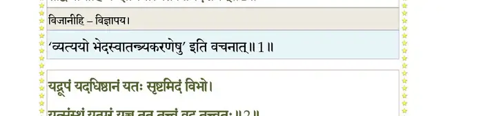
श्लोक २
यद्रूपं यदधिष्ठानं यतः सृष्टमिदं विभो ।
यत्संस्थं यत्परं यच्च तत्तत्वं वद तत्वतः।। २ ।।
यत्संस्थं यत्परं यच्च तत्तत्वं वद तत्वतः।। २ ।।
भागवततात्पर्यनिर्णय
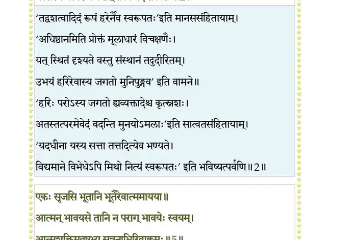
श्लोक ३
सर्वं ह्येतद्भवान् वेद भूतभव्यभवत्प््राभुः ।
करामलकवद्विश्वं विज्ञानावसितं तव।। ३ ।।
करामलकवद्विश्वं विज्ञानावसितं तव।। ३ ।।
श्लोक ४
यद्विज्ञानो यदाधारो यत्परस्त्वं यदात्मकः ।
एकः सृजसि भूतानि भूतैरेवात्ममायया।। ४ ।।
एकः सृजसि भूतानि भूतैरेवात्ममायया।। ४ ।।
श्लोक ५
आत्मन् भावयसे तानि न पराग्भावयेः स्वयम् ।
आत्मशक्तिमवष्टभ्य सूत्रनाभिरिवाक्लमः।। ५ ।।
आत्मशक्तिमवष्टभ्य सूत्रनाभिरिवाक्लमः।। ५ ।।
भागवततात्पर्यनिर्णय
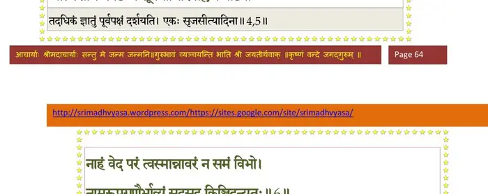
श्लोक ६
नाहं वेद परं त्वस्मान्नावरं न समं विभो ।
नामरूपगुणैर्भाव्यं सदसत्किञ्चिदन्यतः।। ६ ।।
नामरूपगुणैर्भाव्यं सदसत्किञ्चिदन्यतः।। ६ ।।
भागवततात्पर्यनिर्णय
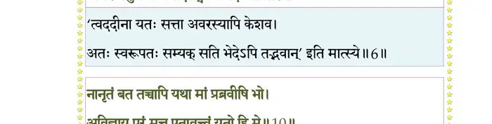
श्लोक ७
स भवानचरद् घोरं यत्तपः सुसमाहितः ।
तेन खेदयसे नस्त्वं परां शङ्कां च यच्छसि।। ७ ।।
तेन खेदयसे नस्त्वं परां शङ्कां च यच्छसि।। ७ ।।
श्लोक ८
एतन्मे पृच्छतः सर्वं सर्वज्ञ सकलेश्वर ।
विजानीहि यथैवेदमहं बुध्येऽनुशासितः।। ८ ।।
विजानीहि यथैवेदमहं बुध्येऽनुशासितः।। ८ ।।
श्लोक ९
ब्रह्मोवाच–
सम्यक्कारुणिकस्येदं वत्स ते विचिकित्सितम् ।
यदहं चोदितः सौम्य भगवद्वीर्यदर्शने।। ९ ।।
सम्यक्कारुणिकस्येदं वत्स ते विचिकित्सितम् ।
यदहं चोदितः सौम्य भगवद्वीर्यदर्शने।। ९ ।।
श्लोक १०
नानृतं बत तच्चापि यथा मां प््राब्रवीषि भोः ।
अविज्ञाय परं मत्त एतावत्त्वं यतो हि मे।। १० ।।
अविज्ञाय परं मत्त एतावत्त्वं यतो हि मे।। १० ।।
भागवततात्पर्यनिर्णय
श्लोक ११
येन स्वरोचिषा विश्वं रोचितं रोचयाम्यहम् ।
यथार्कोऽग्निर्यथा सोमो यथर्क्षग्रहतारकाः।। ११ ।।
यथार्कोऽग्निर्यथा सोमो यथर्क्षग्रहतारकाः।। ११ ।।
श्लोक १२
नमस्तस्मै भगवते वासुदेवाय धीमहि ।
यन्मायया दुर्जयया मां वदन्ति जगद्गुरुम्।। १२ ।।
यन्मायया दुर्जयया मां वदन्ति जगद्गुरुम्।। १२ ।।
भागवततात्पर्यनिर्णय
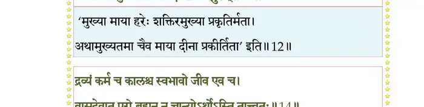
श्लोक १३
विलज्जमानया यस्य स्थातुमीक्षापथेऽमुया ।
विमोहिता विकत्थन्ते ममाहमिति दुर्धियः।। १३ ।।
विमोहिता विकत्थन्ते ममाहमिति दुर्धियः।। १३ ।।
श्लोक १४
द्रव्यं कर्म च कालश्च स्वभावो जीव एव च ।
वासुदेवात्परो ब्रह्मन्न चान्योऽर्थोऽस्ति तात्वतः।। १४ ।।
वासुदेवात्परो ब्रह्मन्न चान्योऽर्थोऽस्ति तात्वतः।। १४ ।।
भागवततात्पर्यनिर्णय
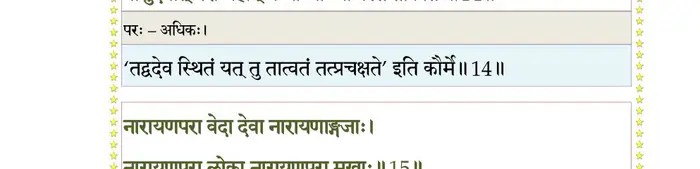
श्लोक १५
नारायणपरा वेदा देवा नारायणाङ्गजाः ।
नारायणपरा लोका नारायणपरा मखाः।। १५ ।।
नारायणपरा लोका नारायणपरा मखाः।। १५ ।।
भागवततात्पर्यनिर्णय
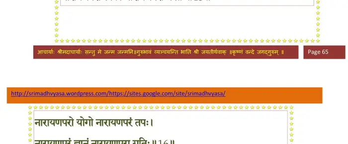
श्लोक १६
नारायणपरो योगो नारायणपरं तपः ।
नारायणपरं ज्ञानं नारायणपरा गतिः।। १६ ।।
नारायणपरं ज्ञानं नारायणपरा गतिः।। १६ ।।
भागवततात्पर्यनिर्णय
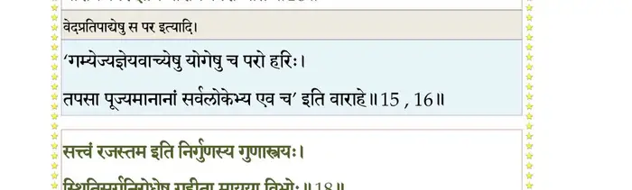
श्लोक १७
तस्यापि द्रष्टुरीशस्य कूटस्थस्याखिलात्मनः ।
सृज्यं सृजामि सृष्टोऽहमीक्षयैवाभिचोदितः।। १७ ।।
सृज्यं सृजामि सृष्टोऽहमीक्षयैवाभिचोदितः।। १७ ।।
श्लोक १८
सत्वं रजस्तम इति निर्गुणस्य गुणास्त्रयः ।
स्थितिसर्गनिरोधेषु गृहीता मायया विभोः।। १८ ।।
स्थितिसर्गनिरोधेषु गृहीता मायया विभोः।। १८ ।।
भागवततात्पर्यनिर्णय
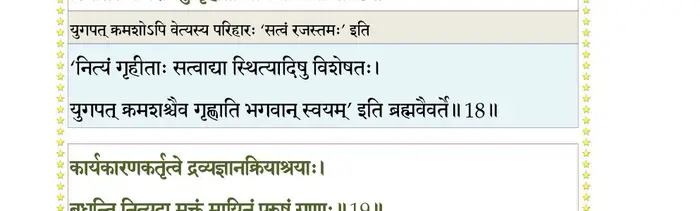
श्लोक १९
कार्यकारणकर्तृत्वे द्रव्यज्ञानक्रियाश्रयाः ।
बध्नन्ति नित्यदा मुक्तं मायिनं पुरुषं गुणाः।। १९ ।।
बध्नन्ति नित्यदा मुक्तं मायिनं पुरुषं गुणाः।। १९ ।।
भागवततात्पर्यनिर्णय
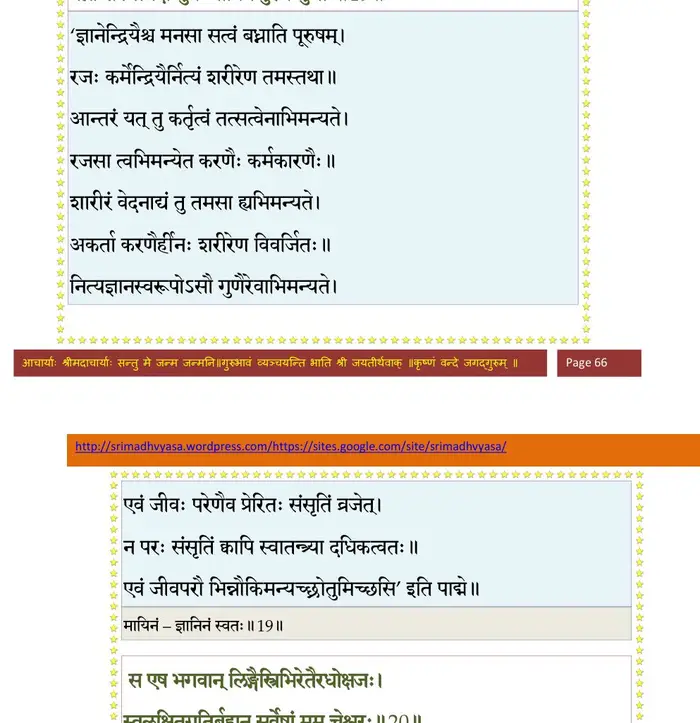
श्लोक २०
स एष भगवाल्लिङ्गैस्त्रिभिरेतैरधोक्षजः ।
स्वलक्षितगतिर्ब्रह्मन्सर्वेषां मम चेश्वरः।। २० ।।
स्वलक्षितगतिर्ब्रह्मन्सर्वेषां मम चेश्वरः।। २० ।।
भागवततात्पर्यनिर्णय
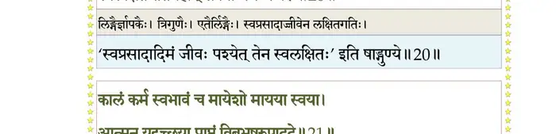
श्लोक २१
कालं कर्म स्वभावञ्च मायेशो मायया स्वया ।
आत्मन् यदृच्छया प््र•प्तं विबुभूषुरुपाददे।। २१ ।।
आत्मन् यदृच्छया प््र•प्तं विबुभूषुरुपाददे।। २१ ।।
भागवततात्पर्यनिर्णय
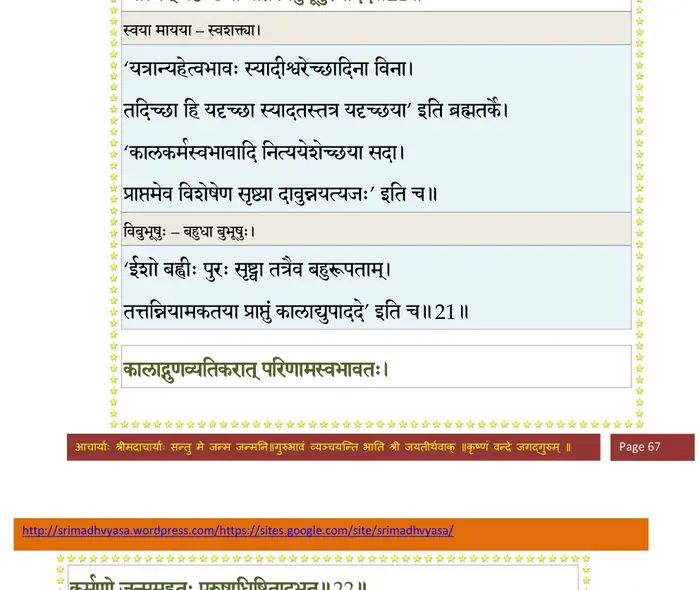
श्लोक २२
कालाद्गुणव्यतिकरात्परिणामस्वभावतः ।
कर्मणो जन्म महतः पुरुषाधिष्ठितादभूत्।। २२ ।।
कर्मणो जन्म महतः पुरुषाधिष्ठितादभूत्।। २२ ।।
भागवततात्पर्यनिर्णय
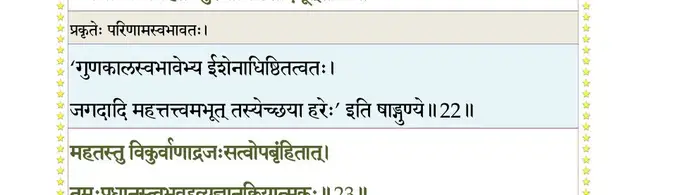
श्लोक २३
महतस्तु विकुर्वाणाद्रजस्सत्वोपबृंहितात् ।
तमः प््राधानस्त्वभवद् द्रव्यज्ञानक्रियात्मकः।। २३ ।।
तमः प््राधानस्त्वभवद् द्रव्यज्ञानक्रियात्मकः।। २३ ।।
भागवततात्पर्यनिर्णय
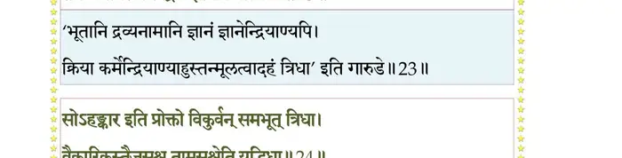
श्लोक २४
सोऽहङ्कार इति प््र•ेक्तो विकुर्वन् समभूत्त्रिधा ।
वैकारिकस्तैजसश्च तामसश्चेति यद्भिदा ।
द्रव्यशक्तिः क्रियाशक्तिर्ज्ञानशक्तिरिति प््राभोः।। २४ ।।
वैकारिकस्तैजसश्च तामसश्चेति यद्भिदा ।
द्रव्यशक्तिः क्रियाशक्तिर्ज्ञानशक्तिरिति प््राभोः।। २४ ।।
भागवततात्पर्यनिर्णय
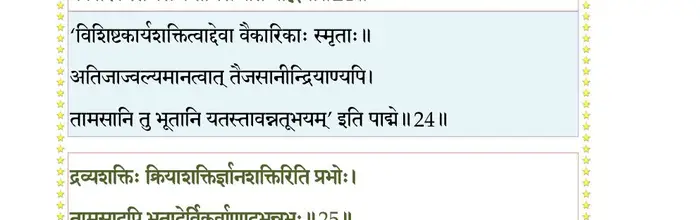
श्लोक २५
तामसादपि भूतादेर्विकुर्वाणादभून्नभः ।
तस्य मात्रागुणः शब्दो लिङ्गं यद्द्रष्टृदृश्ययोः।। २५ ।।
तस्य मात्रागुणः शब्दो लिङ्गं यद्द्रष्टृदृश्ययोः।। २५ ।।
भागवततात्पर्यनिर्णय
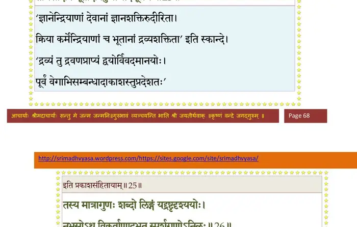
श्लोक २६
नभसोऽथ विकुर्वाणादभूत्स्पर्शगुणोऽनिलः ।
परान्वयाच्छब्दवांश्च प््र•ण ओजः सहो बलम्।। २६ ।।
परान्वयाच्छब्दवांश्च प््र•ण ओजः सहो बलम्।। २६ ।।
भागवततात्पर्यनिर्णय
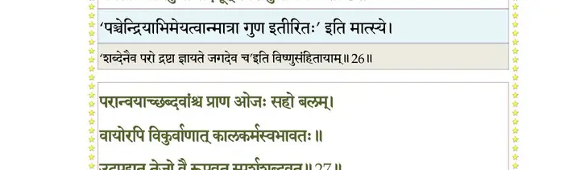
श्लोक २७
वायोरपि विकुर्वाणात्कालकर्मस्वभावतः ।
उदपद्यत तेजो वै रूपवत्स्पर्शशब्दवत्।। २७ ।।
उदपद्यत तेजो वै रूपवत्स्पर्शशब्दवत्।। २७ ।।
भागवततात्पर्यनिर्णय
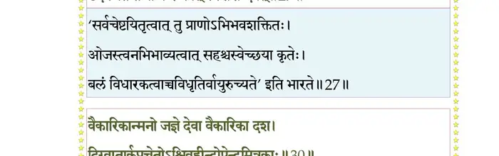
श्लोक २८
तेजसस्तु विकुर्वाणादासीदम्भो रसात्मकम् ।
रूपवत्स्पर्शवच्चाम्भो घोषवच्च तदन्वयात्।। २८ ।।
रूपवत्स्पर्शवच्चाम्भो घोषवच्च तदन्वयात्।। २८ ।।
श्लोक २९
विशेषस्तु विकुर्वाणादम्भसो गन्धवानभूत् ।
परान्वयाद्रसस्पर्शरूपशब्दगुणान्वितः।। २९ ।।
परान्वयाद्रसस्पर्शरूपशब्दगुणान्वितः।। २९ ।।
श्लोक ३०
वैकारिकान्मनो जज्ञे देवा वैकारिका दश ।
दिग्वातार्कप््राचेतोश्विवह्नीन्द्रोपेन्द्रमित्रकाः।। ३० ।।
दिग्वातार्कप््राचेतोश्विवह्नीन्द्रोपेन्द्रमित्रकाः।। ३० ।।
भागवततात्पर्यनिर्णय
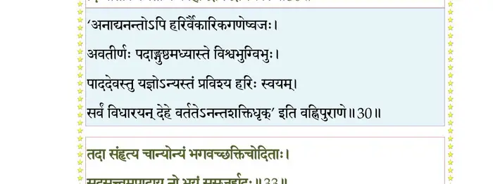
श्लोक ३१
तैजसात्तु विकुर्वाणादिन्द्रियाणि दशाभवन् ।
ज्ञानशक्तिः क्रियाशक्तिर्बुद्धिः प््र•णस्तु तैजसौ।। ३१ ।।
ज्ञानशक्तिः क्रियाशक्तिर्बुद्धिः प््र•णस्तु तैजसौ।। ३१ ।।
श्लोक ३२
श्रोत्रत्वग्घ्राणदृग्जिह्वावाग्दोर्मेढ्राङ्घ्रिपायवः ।
य एतेऽसङ्गता भावा भूतेन्द्रियमनोगुणाः ।
यदायतननिर्माणे न शेकुर्ब्रह्मवित्तम।। ३२ ।।
य एतेऽसङ्गता भावा भूतेन्द्रियमनोगुणाः ।
यदायतननिर्माणे न शेकुर्ब्रह्मवित्तम।। ३२ ।।
श्लोक ३३
तदा संहत्य चान्योन्यं भगवच्छक्तिचोदिताः ।
सदसत्वमुपादाय नो भयं ससृजुर्ह्यदः।। ३३ ।।
सदसत्वमुपादाय नो भयं ससृजुर्ह्यदः।। ३३ ।।
भागवततात्पर्यनिर्णय
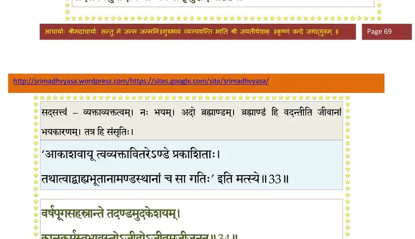
श्लोक ३४
वर्षपूगसहस्रान्ते तदण्डमुदकेशयम् ।
कालकर्मस्वभावस्थोजीवोजीवमजीजनत्।। ३४ ।।
कालकर्मस्वभावस्थोजीवोजीवमजीजनत्।। ३४ ।।
भागवततात्पर्यनिर्णय
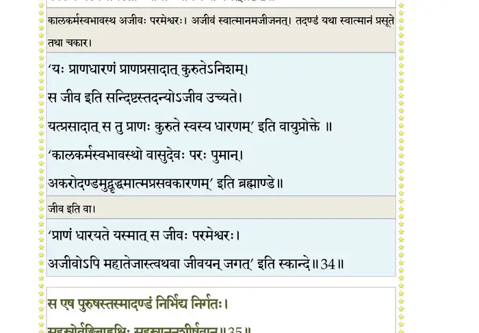
श्लोक ३५
स एष पुरुषस्तस्मादण्डं निर्भिद्य निर्गतः ।
सहस्रोर्वङ्घ्रिबाह्वक्षिः सहस्राननशीर्षवान्।। ३५ ।।
सहस्रोर्वङ्घ्रिबाह्वक्षिः सहस्राननशीर्षवान्।। ३५ ।।
भागवततात्पर्यनिर्णय
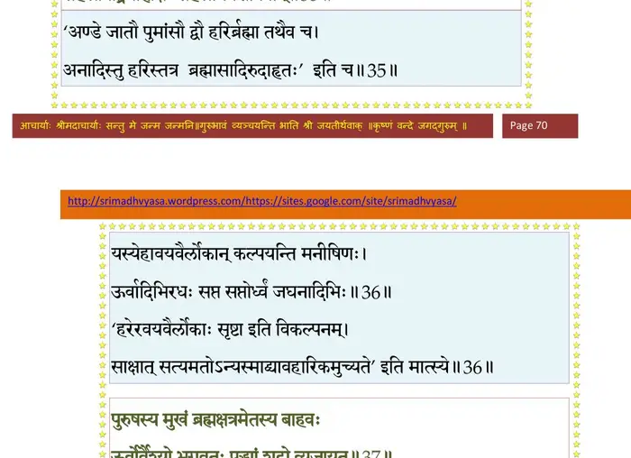
श्लोक ३६
यस्येहावयवैर्लोकान् कल्पयन्ति मनीषिणः ।
ऊर्वादिभिरधः सप्त सप्तोर्ध्वं जघनादिभिः।। ३६ ।।
ऊर्वादिभिरधः सप्त सप्तोर्ध्वं जघनादिभिः।। ३६ ।।
श्लोक ३७
पुरुषस्य मुखं ब्रह्म क्षत्रमेतस्य बाहवः ।
ऊर्वोर्वैश्यो भगवतः पद्भ्यां शूद्रो व्यजायत।। ३७ ।।
ऊर्वोर्वैश्यो भगवतः पद्भ्यां शूद्रो व्यजायत।। ३७ ।।
भागवततात्पर्यनिर्णय
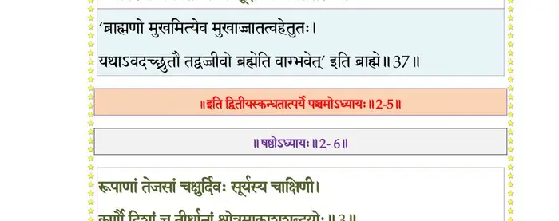
श्लोक ३८
भूर्लोकः कल्पितः पद्भ्यां भुवर्लोकोऽस्य नाभितः ।
हृदा स्वर्लोक उरसा महर्लोको महात्मनः।। ३८ ।।
हृदा स्वर्लोक उरसा महर्लोको महात्मनः।। ३८ ।।
श्लोक ३९
ग्रीवायां जनलोकश्च तपोलोकोऽस्य नेत्रयोः ।
मूर्धभिः सत्यलोकस्तु ब्रह्मलोकः सनातनः।। ३९ ।।
मूर्धभिः सत्यलोकस्तु ब्रह्मलोकः सनातनः।। ३९ ।।
श्लोक ४०
तत्कट्यामतलं क्लृप्तमूरूभ्यां वितलं विभोः ।
जानुभ्यां सुतलं क्लृप्तं जङ्घाभ्यान्तु तलातलम्।। ४० ।।
जानुभ्यां सुतलं क्लृप्तं जङ्घाभ्यान्तु तलातलम्।। ४० ।।
श्लोक ४१
महातलन्तु गुल्फाभ्यां प््रापदाभ्यां रसातलम् ।
पातालं पादतलतः इति लोकमयः पुमान्।। ४१ ।।
पातालं पादतलतः इति लोकमयः पुमान्।। ४१ ।।
श्लोक ४२
भूर्लोकः कल्पितः पद्भ्यां भुवर्लोकस्तु नाभितः ।
स्वर्लोकः कल्पितो मूधर्ि्न इति वा लोककल्पना।। ४२ ।।
स्वर्लोकः कल्पितो मूधर्ि्न इति वा लोककल्पना।। ४२ ।।
।। इति श्रीमद्भागवते द्वितीयस्कन्धे पञ्चमोऽध्यायः ।।